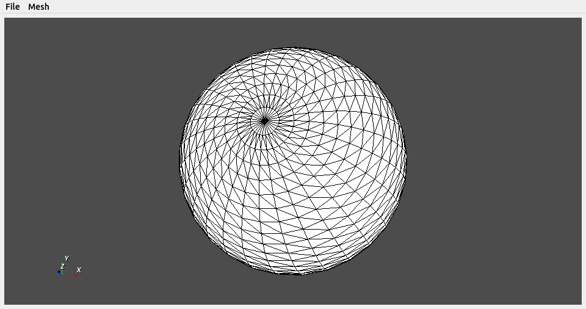

PyVista PyQt Interface¶
PyVista has an interface for placing plots in PyQt5 that extends the
functionality of the QVTKRenderWindowInteractor class.
The pyvista.QtInteractor class allows you to have the same functionality
of the Plotter class within a PyQt5 application.
This simplifies adding meshes, updating, and controlling them when using
PyQt5.
Example PyQt5 PyVista QtInteractor¶
The following example shows how to create a simple application that adds a sphere to an empty plotting window.
import sys
from PyQt5 import Qt
import numpy as np
import pyvista as pv
class MainWindow(Qt.QMainWindow):
def __init__(self, parent=None, show=True):
Qt.QMainWindow.__init__(self, parent)
# create the frame
self.frame = Qt.QFrame()
vlayout = Qt.QVBoxLayout()
# add the pyvista interactor object
self.vtk_widget = pv.QtInteractor(self.frame)
vlayout.addWidget(self.vtk_widget)
self.frame.setLayout(vlayout)
self.setCentralWidget(self.frame)
# simple menu to demo functions
mainMenu = self.menuBar()
fileMenu = mainMenu.addMenu('File')
exitButton = Qt.QAction('Exit', self)
exitButton.setShortcut('Ctrl+Q')
exitButton.triggered.connect(self.close)
fileMenu.addAction(exitButton)
# allow adding a sphere
meshMenu = mainMenu.addMenu('Mesh')
self.add_sphere_action = Qt.QAction('Add Sphere', self)
self.add_sphere_action.triggered.connect(self.add_sphere)
meshMenu.addAction(self.add_sphere_action)
if show:
self.show()
def add_sphere(self):
""" add a sphere to the pyqt frame """
sphere = pv.Sphere()
self.vtk_widget.add_mesh(sphere)
self.vtk_widget.reset_camera()
if __name__ == '__main__':
app = Qt.QApplication(sys.argv)
window = MainWindow()
sys.exit(app.exec_())
{kind=link}

PyQt5 pyvista QtInteractor¶
Background Plotting¶
Normal PyVista plotting windows exhibit blocking behavior, but it is possible
to plot in the background and update the plotter in real-time using the
BackgroundPlotter object. This requires PyQt5, but otherwise appears
and functions like a normal PyVista Plotter instance. For example:
import pyvista as pv
sphere = pv.Sphere()
plotter = pv.BackgroundPlotter()
plotter.add_mesh(sphere)
# can now operate on the sphere and have it updated in the background
sphere.points *= 0.5
Attributes
Return render window size. |
Methods
|
Add a function that can update the scene in the background. |
|
Close the plotter. |
|
Open scale axes dialog. |
Update the app icon if the user is not trying to resize the window. |
-
class
pyvista.BackgroundPlotter(show=True, app=None, window_size=None, off_screen=None, **kwargs)¶ Bases:
pyvista.plotting.qt_plotting.QtInteractorQt interactive plotter.
-
ICON_TIME_STEP= 5.0¶
-
add_callback(func, interval=1000, count=None)¶ Add a function that can update the scene in the background.
- Parameters
func (callable) – Function to be called with no arguments.
interval (int) – Time interval between calls to func in milliseconds.
count (int, optional) – Number of times func will be called. If None, func will be called until the main window is closed.
-
close()¶ Close the plotter.
This function closes the window which in turn will close the plotter through signal_close.
-
scale_axes_dialog(show=True)¶ Open scale axes dialog.
-
update_app_icon()¶ Update the app icon if the user is not trying to resize the window.
-
property
window_size¶ Return render window size.
-